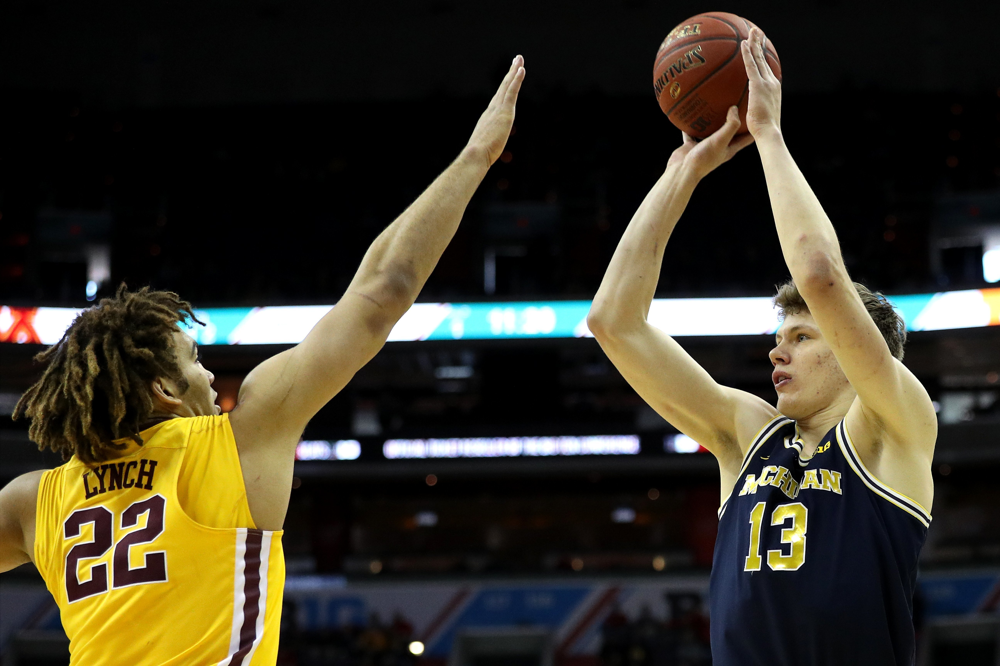

10 Things to Teach your Child to Improve their Basketball Skills, Today!

March 13, 2019 | Coach Manny
Students in our academy (and parents) always ask me, "Coach, what can I do to improve my game (or my
child's game)?" My first response is usually, have you been practicing the drills we did in
practice/training on your own time? If the answer is 'no,' then I'll quickly recap some fundamental
drills (targeting areas of weakness for the student asking), and try to teach them some ways they can
practice on their own.
A good coach not only tells you what to do but also shows you how to do it, a great coach will show
what to do and empower you to add progressions as you continue to improve.
If the answer is 'yes,' then I'll usually show some challenging progressions that the student can work
towards, or direct them to useful resources.
Speaking of useful resources... I have added 10 crucial game-changing basketball tips in this blog
post! You'll notice a lot of what you read is psychological - believe it or not, psychology of the
game is just as, if not more important than your physical ability when it comes to basketball!(We'll
discuss sport psychology in more detail in a future post.)In the meantime, here are your 10 tips
courtesy of ZOR Basketball Academy. Make sure you read through all of them and subscribe to our
mailing list to receive your own copy.
1. Your Game-day Mantra Should Be, “SHOOT! DON’T THINK”
You should focus your shooting mechanics during practice NOT during games. During practice you should hone in on your form, and other shooting skills. Once you have honed in on these skills, your muscle memory slowly start to take over, and you will remove overthinking about shooting. Remember: Practice and perfect your form for shots during practice, not games.
2. STOP BEING SHOOK!
Failure is not fatal! Do not be afraid of failing! Michael Jordan once said, “I've never been afraid to fail." Did you know professional basketball players miss more than half of the time? Do not be scared of missing your shots. The energy put into becoming scared, will cause you to tense up and that will affect your game performance.
3. BE IN THE ZONE
Stay focused and stay determined!
Have you been in the zone
before? When all of your shots were made with no effort and being on the court was just plain
fun.
When you are in The Zone everything else doesn’t matter. So, make it a priority to be in
the Zone when you are playing in games. Un-clutter your mind, and get into the mental space of optimal
focus. Prioritize items on your to-do list before your game, so you don’t need to think of it during
game time.
4. YOU HAVE TO RELAX
Relax your mind so that your body is as relaxed as much as it can
possibly be. Your shooting will be lethal when your mind is more relaxed.
Taking a moment to
relax before a game really pays off.
5. COLOURED BALLS WILL HELP TO CORRECT YOUR ROTATION
Using a coloured basketball during practice, will help improve the trajectory of your shot. The coloured ball will help you see the direction of the ball and way the ball rotates. Being able to see these will aid in correcting your shot pretty quickly.
6. NEGATIVE THOUGHTS WILL OBSTRUCT SUCCESS
Negative thoughts will impact your game! You must actively work towards
eliminating negative thoughts. Once you eliminate negative, you have the ability to drastically boost
your shot percentage!
Here’s a trick to help eliminate those negative thoughts. Before
game-time whisper to yourself, “I don’t care if I make any of my shots today!” Whisper it to yourself
a couple times and psych yourself into believing your words. Repeat your words as you are going up for
your shots.
This process helps you to clear your mind of bad thoughts and relax. This tip will
help you from getting too down on yourself, and maintain your confidence no matter the game-time
situation.
7. Find Your Arc Optimization
Did you know a shot with a flat 45 degree shot has 5 times more of a chance of clearing the hoop than a flat 35 degree arc?! Making sure that the arc of your shot has perfect degree will decrease your margin of error!
8. Youtube Game Footage
Viewing the game footage of your favourite ball players over and over
will help you see the form of excellent shooters. You can pick up tips of how to improve your
confidence and form.
The pros have already perfected their technique. Watching their form will
give you ideas of technique to incorporate in your game.
9. Shoot 50 Shots Before all Games
Take 50 easy shots before all of your practice and games. The repetitive motion of taking this amount of shots will help correct your shooting form, and increase confidence. You will become better and better at these shots with every session. This is a very effective drill that all of the pros do!
10. DO THE WORK!
In order to become good at anything (especially basketball) you have to
put THAT work in. The more hours you put into practice, the better your results. Becoming a better
player does not happen instantly. You have to work hard every day, to get to achieve your level of
skill and fitness. There is no secret to your overall basketball improvement. It is the outcome of
preparation, hard work and learning from failure.
Done? Ok, good! Now start applying these tips
in your daily routine and basketball training. Also, don't ask me to pick a favourite tip because,
honestly, I can't! They are all VERY helpful tips!
Until next
time,
#ZORFam